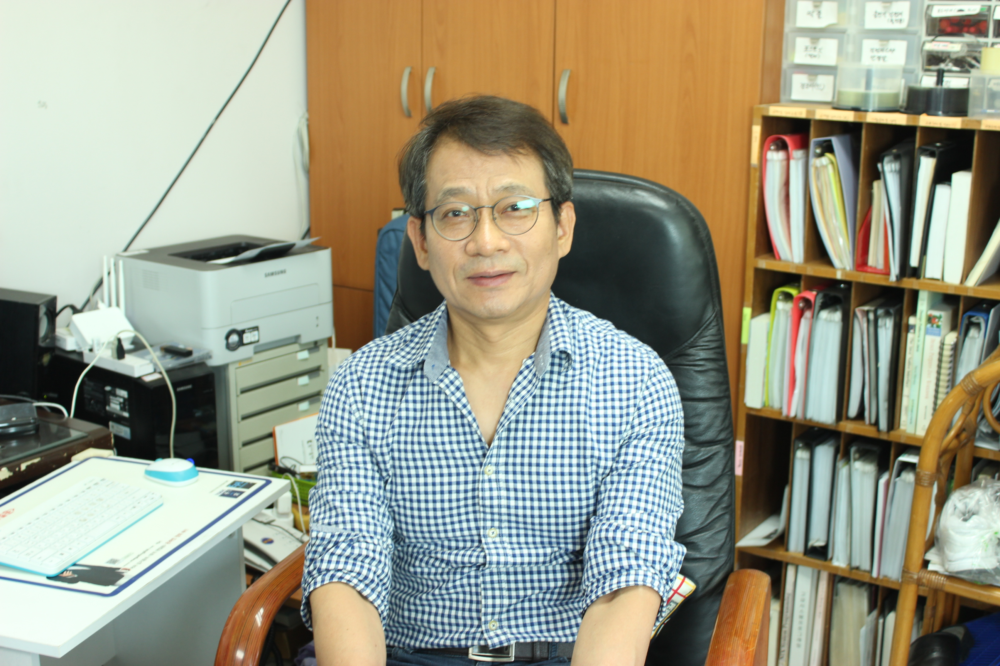
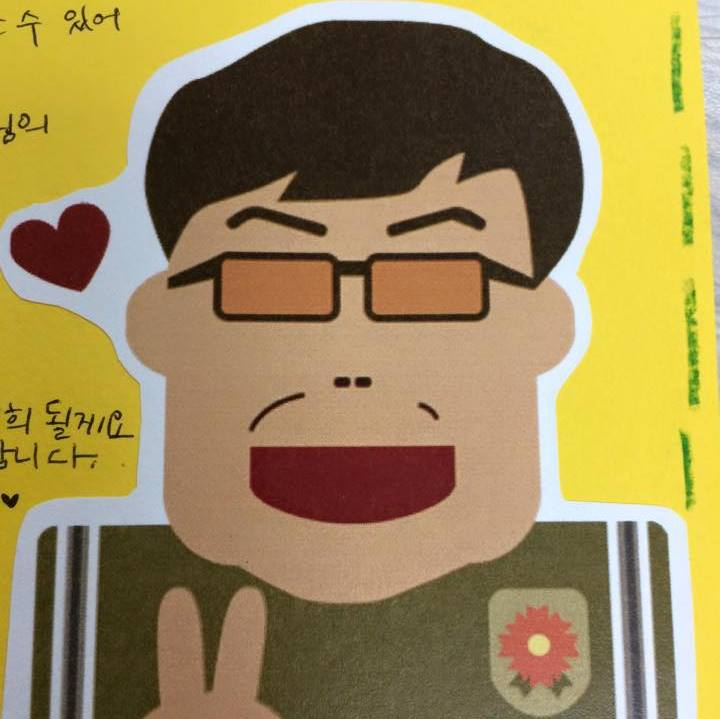

Professor
Congratulatory Message
박태정 교수님
 4년, 혹은 그 이상의 기간 동안 디지털미디어 학과에서 매일 고생하면서 드디어 졸업 작품 전시를 앞두고 있는 여러분께 축하의 말씀을 전합니다. -
다른 학과에서는 그렇게 흔하지는 않은 – 생각만 해도 우울해 지는 과제의 압박과 쳐다보기만 해도 정신이 멍해지는 코드의 홍수 속에서, 때로는 좌절하기도 하고 때로는 인간이 아닌 듯,
디미몬의 숙명인 레벨업이라는 길을 걸으면서 많은 노력을 해서 여기까지 온 학생들이 자랑스럽습니다. 공학 전공의 특성 상 – 어떻게 보면 – 인간의 생각을 기계의 작동 방식에 억지로 끼워 맞춰 나가는 듯한 느낌 때문에 그 과정이 쉽지는 않았을 겁니다.
그리고 공학을 전공한 사람들은 대부분 경험하게 되는 과정이기도 합니다.
4년, 혹은 그 이상의 기간 동안 디지털미디어 학과에서 매일 고생하면서 드디어 졸업 작품 전시를 앞두고 있는 여러분께 축하의 말씀을 전합니다. -
다른 학과에서는 그렇게 흔하지는 않은 – 생각만 해도 우울해 지는 과제의 압박과 쳐다보기만 해도 정신이 멍해지는 코드의 홍수 속에서, 때로는 좌절하기도 하고 때로는 인간이 아닌 듯,
디미몬의 숙명인 레벨업이라는 길을 걸으면서 많은 노력을 해서 여기까지 온 학생들이 자랑스럽습니다. 공학 전공의 특성 상 – 어떻게 보면 – 인간의 생각을 기계의 작동 방식에 억지로 끼워 맞춰 나가는 듯한 느낌 때문에 그 과정이 쉽지는 않았을 겁니다.
그리고 공학을 전공한 사람들은 대부분 경험하게 되는 과정이기도 합니다.
그러나 여러분은 이러한 과정을 통해서, 가장 인간적이고 감성적인 부분을 지키면서도, 사회와세상을 보다 객관적이고 이성적으로 볼 수 있는 능력을 키웠습니다.
컴퓨터 공학과 미디어 분야는 공통적으로. 최적의 경험, 즉, 사람들에게 즐거움과 행복을 준다는 궁극적인 목표를 가지고 있습니다. 여러분들이 앞으로 사회에 나가서 이러한 일들을 누구보다 잘 할 수 있도록,
그래서, 다른 사람들에게 진정한 즐거움과 행복을 줄 수 있도록, 여러분 스스로가 먼저, 쾌활하고 즐거운 태도로, 항상 즐겁고 행복한 사람이 되시길 바랍니다. 여러분 삶의 목표도 ‘최적의 경험’이라는 사실을 항상 잊지 마시고
어떠한 어려움이 닥치더라도 긍정적으로 생각해서 스스로 어려움을 극복하고 그 과정까지도 즐길 수 있는 사람이 되시길 기원합니다.
정원호 교수님
 “시간은 화살같이 흐른다”는 말에 대한 실감이 갈수록 커지고 있습니다. 작년 졸업작품 전시회 끝난 지가 엊그제 같은데 벌써 또 졸업작품 전시회가 시작됩니다. 올해도 여러분의 땀과 노력의 결실인 졸업작품이 탄생하여 쇼윈도우에 전시되어 지인들의 눈길을 기다리게 되겠지요? 자세히는 몰라도 어떤 작품들이 전시될 지는 세미나와 발표회를 통해 대략적으로 알고 있습니다. 제 생각에 괜찮은 작품들도 있고 좀 아쉬운 작품들도 있습니다.
여러분의 졸업작품은 여러분이 대학 4년간 고생과 노력을 통해 생성한 여러분의 자식이라고 생각해야 합니다. 평생 여러분 곁을 떠나지 않을 것이라 생각하기 때문입니다. 그리고 중요한 시점에 결정적 요건으로 작용할 지도 모릅니다. 아니 그렇게 작용할 것입니다. 4년간 여러분이 쏟아 넣은 시간에 비례하여 그 자식들은 성장의 결실이 다를 것입니다. 이러한 점은 앞으로 졸업작품이라는 자식을 만들어내야 하는 재학생들에게도 절실하게 하고 싶은 얘기이기도 합니다.
자식이 여러분 자체가 아니듯 졸업작품 또한 여러분의 모든 것을 결정하는 것은 아닙니다. 졸업작품의 제작을 통해 얻은 지식, 작업 방식, 팀 정신 등 여러 가지가 여러분의 장래에 밑거름이 되기를 바랍니다. 그리하여 더 나은 디지털미디어학과의 미래를 위해 좋은 선배가 되었으면 하고 선선한 바람이 부는 가을 문턱에서 기대해 봅니다.
디지털미디어학과
교수 정 원 호
임양미 교수님
 벌써 디지털미디어학과 졸업이 4기를 맞는다. 나도 덕성에 온지가 벌써 7년째로 접어든다.
신설과를 정착시키는데 적어도 4년 이상은 걸린 것 같다. 전공교과목 코드넘버가 제대로 없어서 고생하고 실습 컴퓨터를 전부 설치하는데 7년이 걸렸다.
하지만 7년 동안 본 학과의 ICT 전공 동향은 상당히 많이 발전하여 강의 노트도 수없이 바뀌고 졸업 팸플릿에 실리는 졸업작품의 형태도 많이 달라졌다.
졸업 작품을 준비하는 1년 동안도 새로운 스마트폰들이 지속적으로 출시되고, 새로운 콘텐츠가 계속 나왔다. 하지만 우리는 급속한 변화 속에 자신의 것을 완벽히 만들기 위해 진득한 시간이 필요하다.
기초 바닥 공사 없이 기둥을 세울 수 없고 벽을 쌓고 2층, 3층의 건물을 만들 수는 없다. 주변이 난다고 해서 날개도 없이 날 수는 없다.
벌써 디지털미디어학과 졸업이 4기를 맞는다. 나도 덕성에 온지가 벌써 7년째로 접어든다.
신설과를 정착시키는데 적어도 4년 이상은 걸린 것 같다. 전공교과목 코드넘버가 제대로 없어서 고생하고 실습 컴퓨터를 전부 설치하는데 7년이 걸렸다.
하지만 7년 동안 본 학과의 ICT 전공 동향은 상당히 많이 발전하여 강의 노트도 수없이 바뀌고 졸업 팸플릿에 실리는 졸업작품의 형태도 많이 달라졌다.
졸업 작품을 준비하는 1년 동안도 새로운 스마트폰들이 지속적으로 출시되고, 새로운 콘텐츠가 계속 나왔다. 하지만 우리는 급속한 변화 속에 자신의 것을 완벽히 만들기 위해 진득한 시간이 필요하다.
기초 바닥 공사 없이 기둥을 세울 수 없고 벽을 쌓고 2층, 3층의 건물을 만들 수는 없다. 주변이 난다고 해서 날개도 없이 날 수는 없다.
4기 졸업생 여러분! 아무리 마음이 급하고 바빠도 운동화 없이 뛰지 말고, 날개 없이 날지 말아야 합니다. 지금 많이 초조해도 주변과 비교하지 말고 내가 할 수 있는 최선의 기초를 닦아야 하고, 너무 많이 힘들 땐 괜찮다고 스스로 위로하며 극복해야하고, 늦었다고 생각할 때마다 ‘너무 일찍 나왔군!’ 이라고 생각하면 마음의 여유가 생깁니다. 시간에 쫒기다 보면 마음까지 빼앗겨서 어느 하나 완벽한 마무리가 되지 않습니다. 똑같은 조건 아래라도 우리들이 겪는 힘듦과 아픔은 객관적인 것이기 보다 주관적이어서, 긍정적 사고가 가장 중요하다고 생각합니다.
장미꽃이 너무 예뻐서 꽃을 꺾다가 가시에 찔리면, 하필이면 가시가 돋쳐있을까 라고 생각하기보다 쓸모없는 가시나무에 아름다운 꽃이 피었다고 생각할 수 있는 진득한 마음의 여유로 사회에 나가길 바랍니다. 같은 팀으로 일했던 친구가 못했다고 생각만 하지 말고 있어서 돈독했던 1년을 돌아보면서요...
진심으로 졸업 전시 개최를 축하드립니다.
음두헌 교수님
 졸업 예정자들한테는 프로젝트 과목을 통해서 잔소리를 할 만큼 했기 때문에 이번 글도 작년 글처럼 앞으로 졸업 작품을 진행할 1~3학년 학생들을 대상으로 작성해 본다.
해마다 새로운 IT 기술이 출현하고 그에 따라 우리 학생들의 졸업 작품도 다양해지는 것처럼 보인다. 그러나 자세하게 들여다보면, 이전에 없던 새로운 기술이 등장하는 경우보다는 이전 기술을 가지고 친근한 개발 환경을 제공하도록 개선하고 다른 기술들과의 연계를 강화해서 새로운 기술인 것처럼 용어만 갈아타는 경우가 대부분이다. 예를 들어, 사물인터넷 기술은 기존의 임베디드 시스템 기술에서 용어만 갈아탄 것이고 모바일 프로그래밍 기술이나 웹 프로그래밍 기술과 다른 것처럼 보이지만 모바일 기기나 컴퓨터도 사물인터넷에서 얘기하는 정보를 처리하고 주고받는 사물이기 때문에 다른 것이 아니다. 아이폰의 혁신적인 사용자 인터페이스 기술 정도가 새로운 기술이라고 할 수 있을 것이다. 그러나 이러한 용어 갈아타기의 경향은 IT 분야의 속성상 계속 이어질 것처럼 보인다.
대학의 IT 관련 학과에서 운영하는 교과 과정은 일반적으로 이러한 경향을 따라가는 과목보다는 기본기를 다지는 과목들로 구성된다. 기본기가 정립돼야 험난한 IT 분야에서 롱런할 수 있고 기본기가 확고해야 IT 분야의 춤추는 경향도 제대로 탈 수 있기 때문이다. 그러나 기본기가 없어도, IT 작품을 만들기 위해서 필요한 1부터 10까지의 세세한 과정을 아주 친절하게 유도해 주는 정보, 솔루션, 책 등이 넘쳐나는 시대에 우리는 살고 있다. 잘 이해가 되지 않아도 이 과정을 따라가기만 하면 작품이 만들어진다. 완성된 작품이 근사해 보여도 정작 사용된 기술이 어떤 것이고 왜 사용했는지 모르는 경우가 많다. 그래서 나는 세련되지 못해도 교과 과정에서 학습했던 내용들을 연계한 졸업 작품들을 선호하고 이게 졸업 작품을 위해서 맞는 방향이라고 생각한다.
부디, 교과목들을 충실하게 듣고 졸업 작품은 기본기를 바탕으로 자기 힘으로 해결하자!!! 그게 IT로 오래 밥 먹고 살 수 있는 길이다.
강남희 교수님
 자주 들어온 말 중에 “실패는 성공의 어머니”라는 말이 있습니다.
“많이 실패해야 성공한다”고도 합니다. 막연히 들여다보면 많은 이들이 말하니 그런가 하겠지만, 조금만 생각해보면 단순히 정량적 실패의 회수가 성공을 만들지는 않다는 것을 누구나 쉽게 알 수 있습니다.
자주 들어온 말 중에 “실패는 성공의 어머니”라는 말이 있습니다.
“많이 실패해야 성공한다”고도 합니다. 막연히 들여다보면 많은 이들이 말하니 그런가 하겠지만, 조금만 생각해보면 단순히 정량적 실패의 회수가 성공을 만들지는 않다는 것을 누구나 쉽게 알 수 있습니다.
실패에는 언제나 크고 작은 이유(핑계나 변명이 아닌)가 있었던 것 같습니다. 잘못된 선택을 했었을 수도 있고, 역량이 부족해서 일수도 있고, 운이 없어서 일수도 있습니다. 어쩌면 애당초 될 수 없는 일을 시도해서 일수도 있습니다. 결국 내가 얻은 실패가 앞으로 얻어낼 성공의 어머니가 되기 위해서는 실패의 원인 중 내가 바꿀 수 있는 일들을 찾아내고, 그 원인을 줄여나가도록 노력해야 한다는 것입니다.
중요한 것은 “내가 바꿀 수 있는 일”을 정확히 알아나가는 겁니다. 그것을 어떻게 알 수 있을까요? 결국 자꾸 실패하고 그 원인을 분석하고 나의 역량을 키워 나가야 한다는 겁니다. 실패해 봐야 내가 할 수 있는 일과 그렇지 않은 일을 구분할 수 있고, 역량이 커져야 실패의 원인을 바꿀 수 있는 선택의 폭이 많아질 테니까요.
졸업작품을 만드는 과정에서 많이 실패하셨나요?
곧 학교라는 울타리를 벗어나 사회로 나가게 되면 성공하는 어른이 되기 위한 찾기로 젊음을 보냈으면 합니다. 젊음이 가기 전에 성급하게 성공하려고, 또 너무 많은 것을 한 순간 갖고자 욕심내지지 않았으면 합니다. 해야 할 일들이 잔뜩 담긴 체크 리스트 만 만들지 말고, 하고 싶은 일들이 잔뜩 적힌 버킷 리스트를 만들고 실행에 옮기십시오. 꿈만 꾸면서 낭비되는 시간이 아닌 내 버킷 리스트를 하나하나 이뤄나가는 시간들로 채워나가셨으면 합니다.
어려울 것이라는 선입견으로 단 한 번도 시도해 보지 않고 그냥 물끄러미 쳐다보지 않았으면 합니다. 두어 번 두드려서 열리지 않는다고 너무 쉽게 발길을 돌리지 않았으면 합니다. 힘들고 속상한 일들을 많이 접하게 되겠지만 한 걸음 한 걸음 나아가길 바랍니다.
내 보폭이 다른 사람의 반에 반도 미치지 못하더라도 실망하지 말고 그들과 비교하지 말고, 열린 마음과 젊음의 힘으로 무엇이든 부딪치고 그 안에서 무엇이던 얻어내려고 힘을 쏟기를 바랍니다. 내 최선으로 내 손에 무엇인가를 쥐어보시고 늦은 밤 혼자 웃어보시길 희망합니다.
가끔씩은 자신을 한 번 쓰다듬어 주고, 또 새롭게 출발할 수 있도록 격려해 주셨으면 합니다.
참 잘 했다고, 그동안 고생 많았다고...